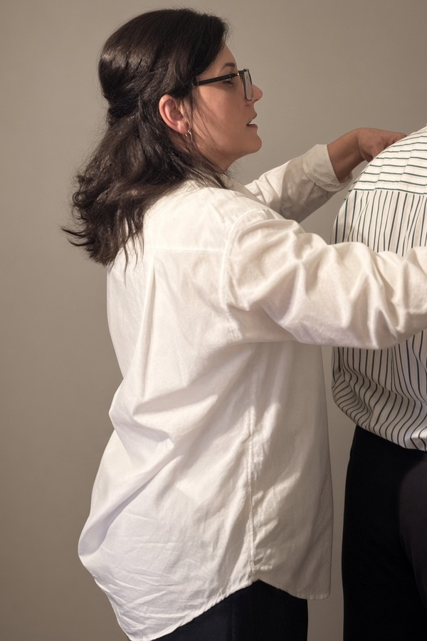
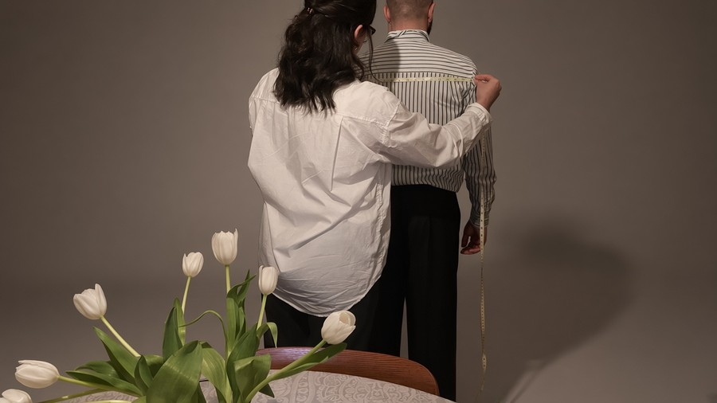
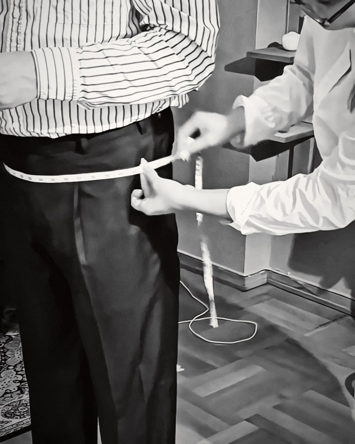
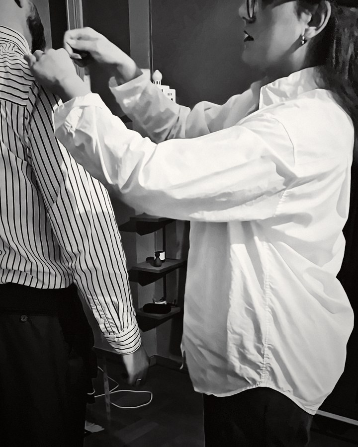
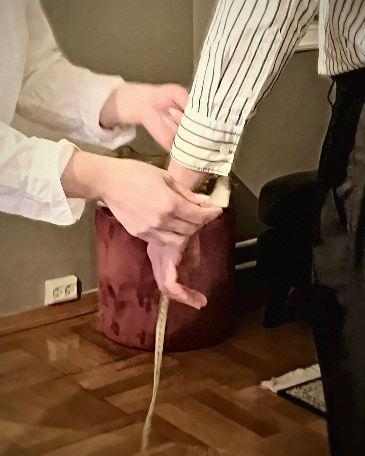
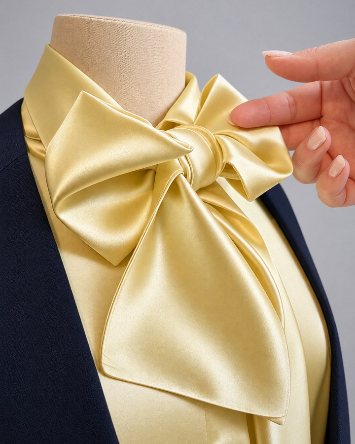
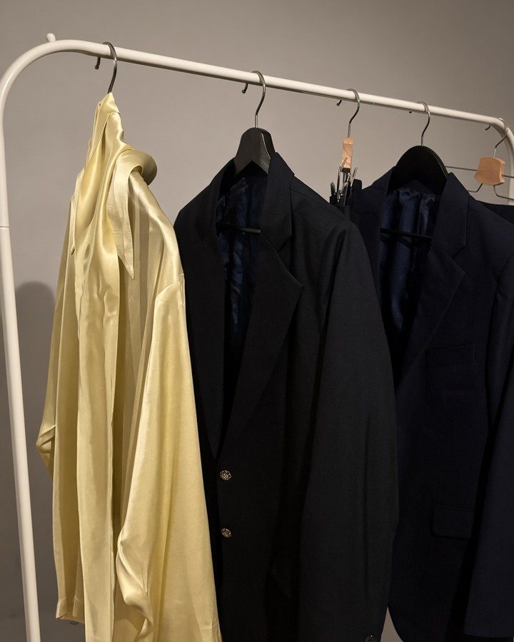
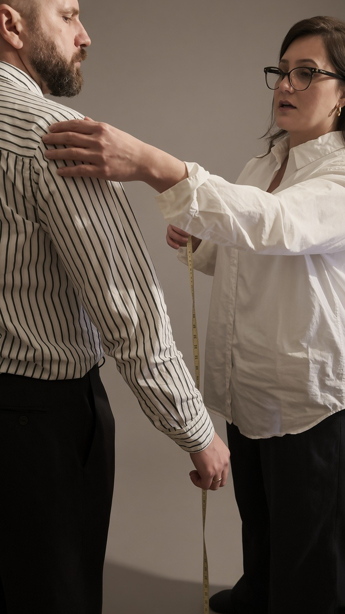
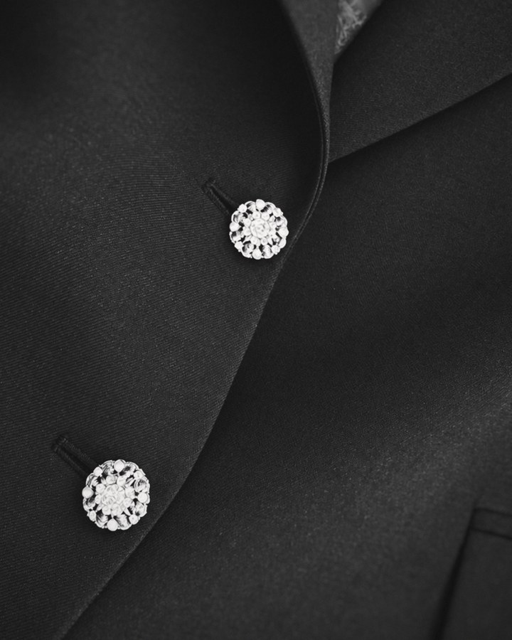
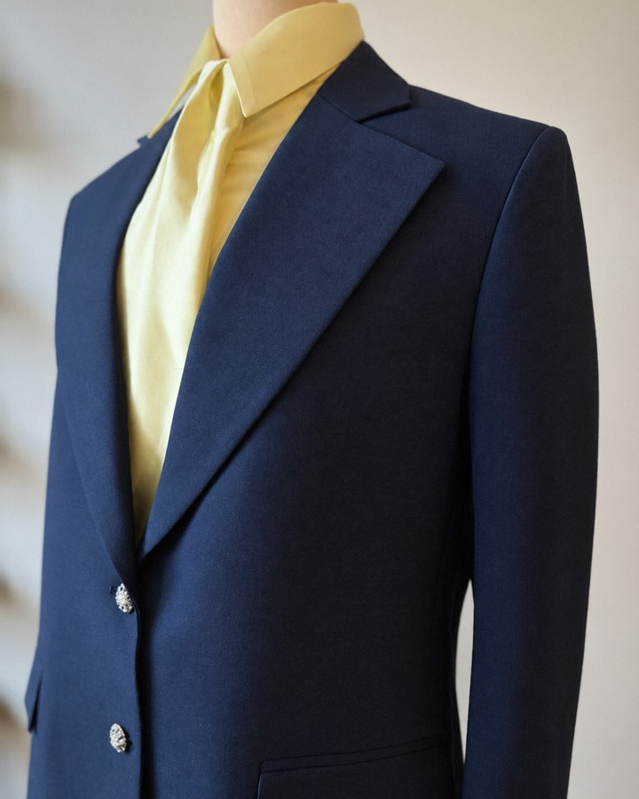

SEN
Oslo
Dressen som endelig passer
Sheila Brox er designeren bak SEN Oslo. Her sys hver dress for hånd, til én person om gangen.

Først: Paris
Paris Haute Couture Fashion Week
SEN Oslo lager ikke bare fine dresser – de har faktisk blitt brukt av folk på Paris Haute Couture Fashion Week i år. For en bragd! Dressen sklir rett inn blant de kjente luksusmerkene, men den skiller seg også ut.
Der ble dressen anerkjent av selveste Taraji P. Henson, en amerikansk skuespiller vi digger!
Foto: Sheila Brox / SEN Oslo
Nesten passer. Ikke godt nok.
Du kjenner den. Dressen som sitter fint over skuldrene, men er litt for lang i buksen. Jakken som er perfekt oppe, men ikke nede. Små ting, men de irriterer hver gang.
Det er her SEN Oslo gjør en forskjell. Sheila er presis når hun måler, og dobbeltsjekker at alt er riktig, slik at du får en dress som sitter perfekt.


Laget for deg, sydd for hånd
Hos SEN Oslo lages hvert plagg til én bestemt kunde og sys for hånd av en skredder. Ingen lager. Ingen serier. Plagget skal være laget til akkurat deg og din kropp.
Du velger farge og design selv, og lengder, skuldre og snitt tilpasses kroppen din – enten du er veldig høy, veldig lav eller aldri har funnet en dress som passer.
Og én ting er ufravikelig: Sheila lager aldri noe hun selv synes er stygt.

Ingen lager. Ingen serier.




Detaljene gjør jobben
Stilen er rolig, ren og klassisk. Rene linjer, godt stoff, ingen støy. Men se nærmere: litt annerledes knapper, et uvanlig snitt, en krage du ikke finner i butikken. Slik skiller en SEN-dress seg ut uten å rope.
Og den er laget for å brukes. Dressene passer til flere anledninger og er ikke ment å henge i skapet. En oversized blazer til jeans. En hel dress med silkeskjorte under. Kle den opp eller ned, eller bruk buksen for seg selv. Du får flere antrekk ut av ett plagg – og mer igjen for pengene.



Hun leser fargene før de kommer
Sheila lager ikke sesongkolleksjoner, men hun følger med. Hun leser fargeprognoser og jakter på nøyaktig riktig nyanse: Er grått på vei opp, finner hun akkurat den gråtonen som gjelder. Fargene hun valgte til de to første dressene, dukket senere opp i butikkene.
Drømmen: mål deg selv fra sofaen
I dag bestiller kundene via Instagram, og målene tas hjemme eller i studio. Sheila drømmer om noe enklere: å stille seg foran en vegg, la teknologien regne ut skulderbredde og armlengde, velge farge og snitt fra sofaen og få dressen i posten.
Teknologien er ikke presis nok ennå, men en nettside med standardstørrelser og skreddersøm er planen.


Kort fortalt
- Laget for deg.Hvert plagg sys til én kunde.
- Sydd for hånd.Av en skredder – aldri masseprodusert.
- Passform.Tilpasset høyde, skuldre og lengder.
- Dine valg.Farge og design bestemmer du selv.
- Detaljer du ikke finner i butikken.Knapper, snitt og krage.
- Allsidig.Fra hverdag til fest.
Foto: AVANT
SEN Oslo er ikke en dress til alle. Den er en dress til deg.
Fra besøket og verkstedet






Møt merket
SEN Oslo
Dresser sydd for hånd, til én person om gangen. Designet av Sheila Brox.
- Merke
- SEN Oslo
- Designer
- Sheila Brox
- Tekst
- AVANT
- Foto
- AVANT (besøket)
- Produktfoto
- Sheila Brox / SEN Oslo
- Bildebehandling
- Bilder digitalt bearbeidet
- Utgave
- Featured Edit 01 · Høst 2026